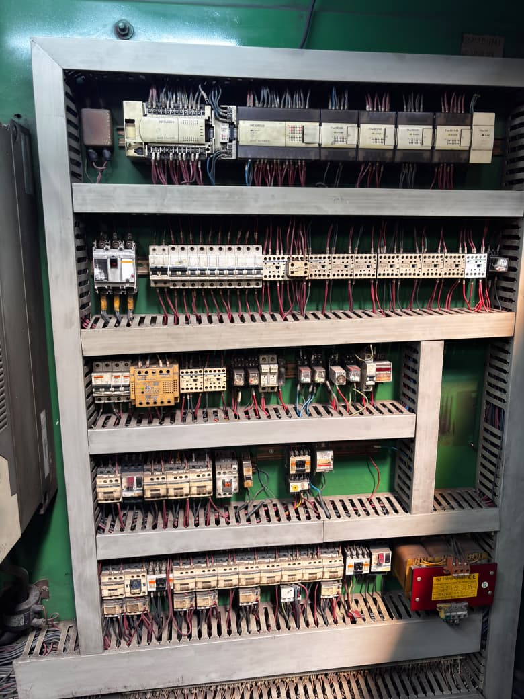
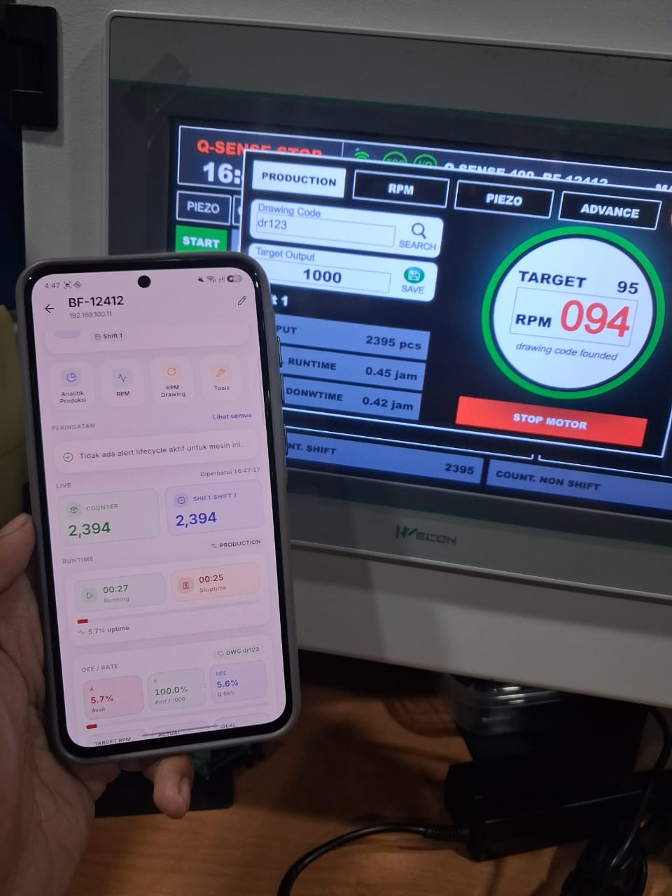
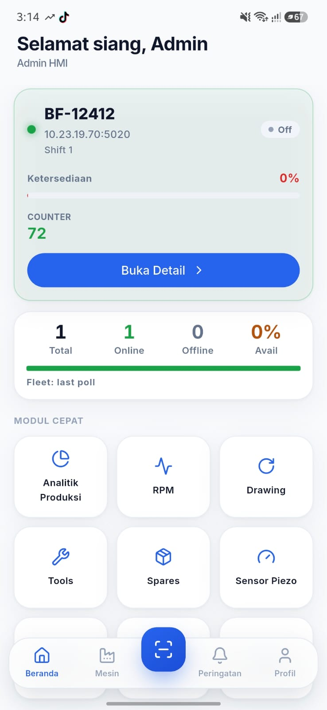
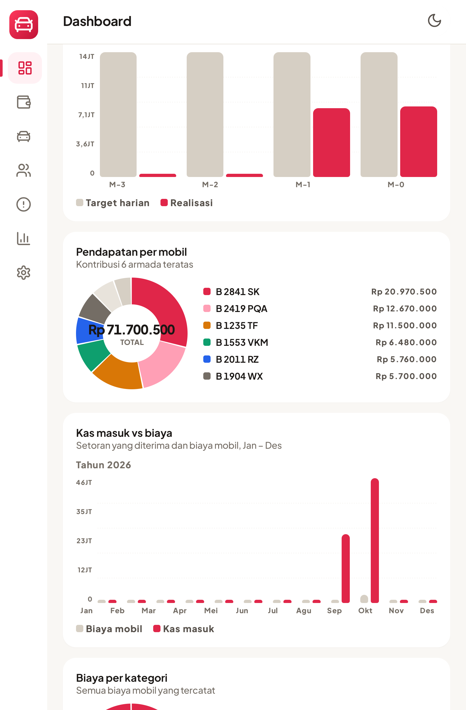
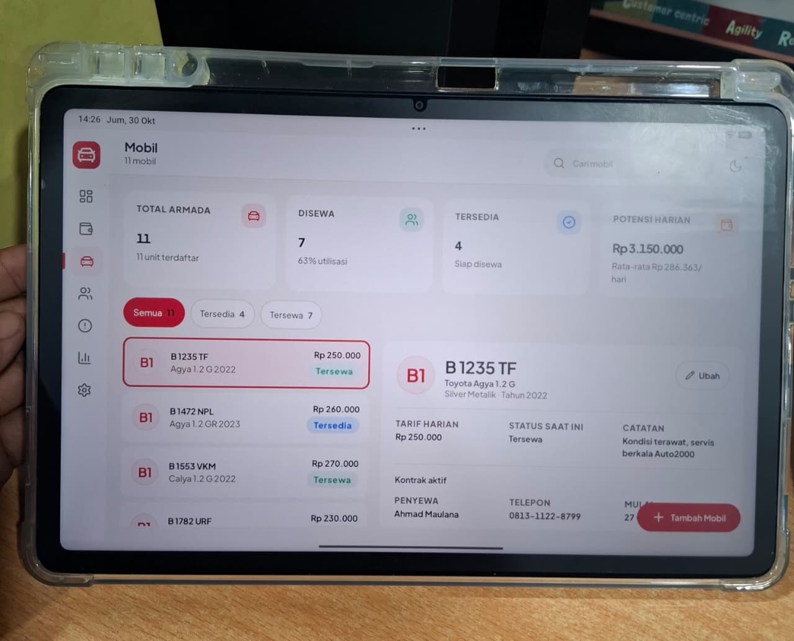
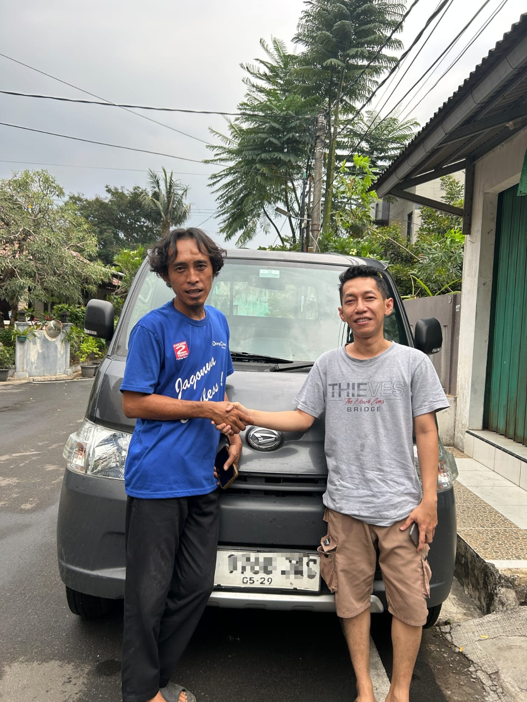
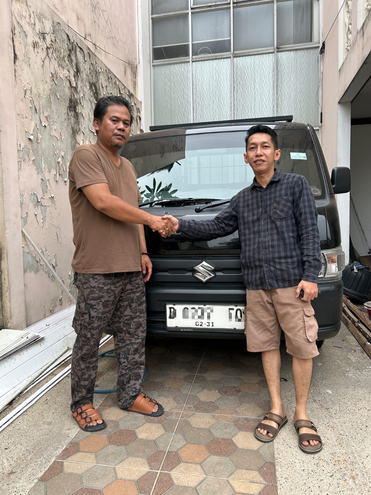
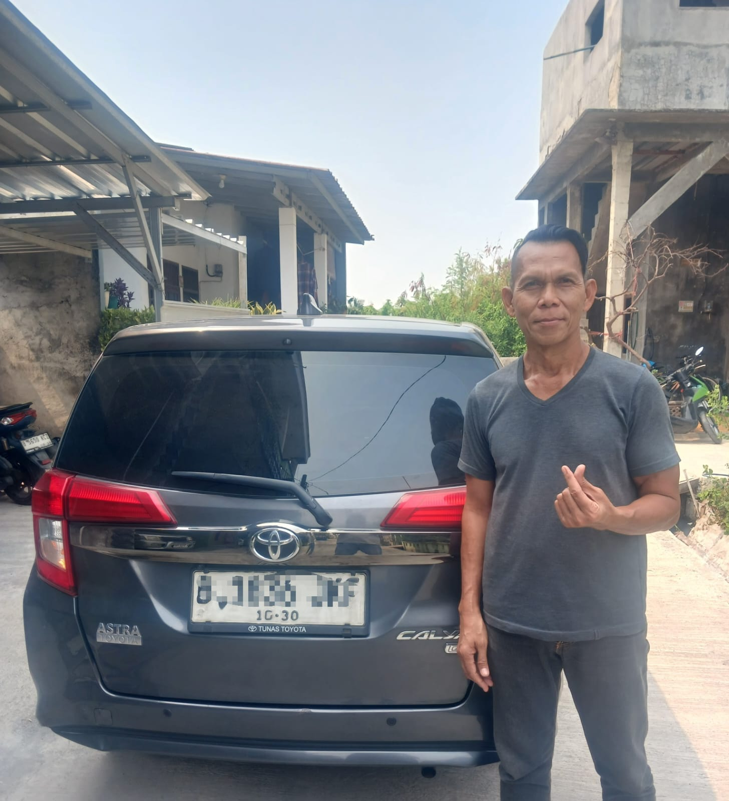
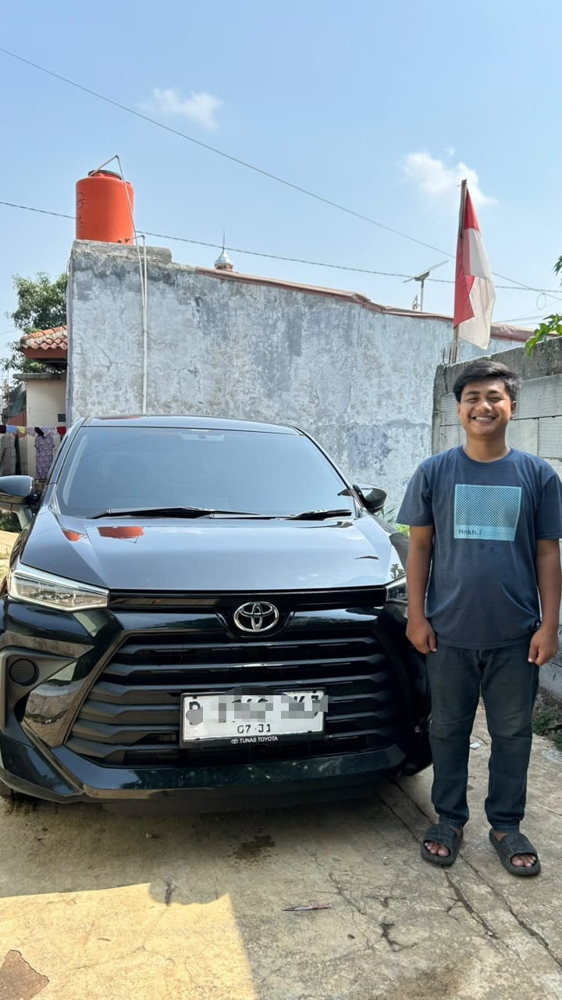

Kami menerima proyek website, aplikasi Android untuk tablet, dan otomasi industri & IoT. Kami juga menjalankan rental mobil untuk driver GoCar, dan seluruh pencatatan rental itu jalan di aplikasi buatan kami sendiri.
Sistem yang baik itu yang membuat pekerjaan Anda lebih mudah, bukan menambah repot.
Kami pelajari dulu cara kerja usaha Anda sehari-hari, baru menentukan teknologinya. Sistemnya yang menyesuaikan dengan usaha Anda, bukan usaha Anda yang dipaksa menyesuaikan sistem.
Website, aplikasi tablet, panel otomasi, dan perangkat IoT. Proyek kami sebut selesai kalau sudah dipakai kerja sehari-hari tanpa masalah, bukan cuma lancar waktu demo.
Sistem yang kami buat kami pakai sendiri di rental kami. Jadi kalau ada error atau kekurangan, kami tahu duluan dan langsung memperbaikinya.






Yang kami kerjakan
Dari company profile dan landing page sampai web app internal. Kalau kebutuhan Anda cukup dengan situs statis tanpa server, kami sarankan situs statis. Situs ini contohnya.
Diskusi proyekAplikasi native untuk operasional: pencatatan sewa, kasir, stok, dan laporan. Contohnya Klinik.Net pada foto di atas, yang kami buat dan pakai sendiri setiap hari.
Diskusi proyekPanel kontrol, pengambilan data sensor, dan monitoring mesin untuk manufaktur. Kami kerjakan dari gambar wiring sampai dashboard operator.
Diskusi proyekUnit usaha kami
Rental mobil yang kami jalankan sendiri setiap hari. Unit disewakan ke driver GoCar secara harian maupun mingguan, dan seluruh pencatatannya, dari setoran sampai tunggakan, berjalan di Klinik.Net buatan kami.
Sewa mobil

